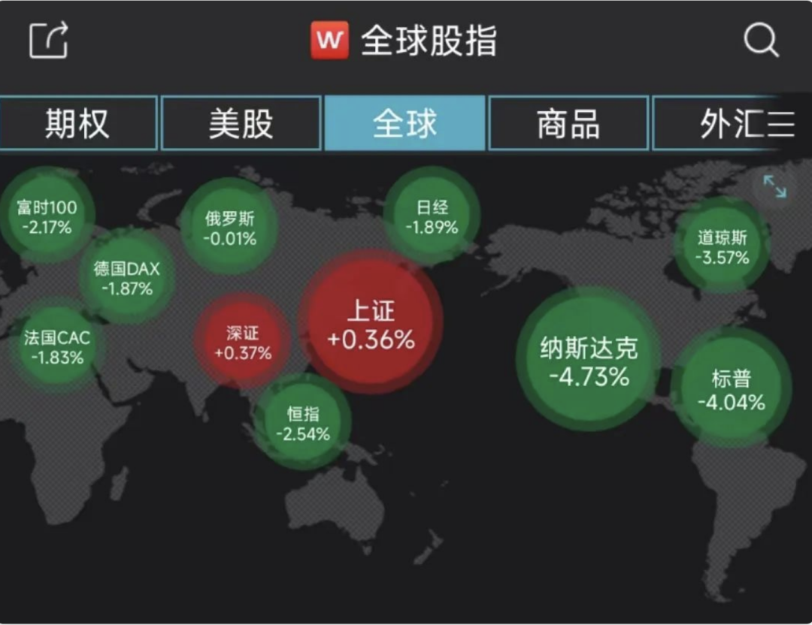

乐观一点
原创 V姐万事屋 V姐来了 2022-05-20 07:00 发表于上海 原文链接(长) 原文链接(短)Hi, 我是V姐。
这几天A股的脊梁硬邦邦的，美股跌成狗跟我们仿佛没有关系，甚至有那么一丝反向指标的意思。全球一片绿，独红我一个。

被PUA久了，我们股民朋友面对这种独一份的荣宠，高兴中带着一丝慌乱。
大家心里盘算着，可以跑了吗？什么时候跑？再不跑要跌了吧？
老乡你先别走，听我再胡言乱语几句。
我在上周文章里讲说，我们汇率这波到6.8就差不多要下来了，不小心被我说中。
这个事情是这样的，汇率体现了国际资金的动向。
资金在流动时会看息差，但是息差只是个表象，背后其实是经济基本面。
也就是说 **货币是实体经济的影子**。否则卢布加息20%，巴西央行加息12.75%，也不见国际资本蜂拥而至去买他们的资产啊。
所以哪里经济见底了，经济基本面不错，资金自然会回流。
之前也有不少朋友认为中国不可能降息，因为我们跟美国10年国债利率出现了倒挂。
我个人认为不见得。货币政策自主不是瞎说的，因为我们的通胀在低位，这提供了非常有利的降息空间。通胀低，就能用货币宽松助推经济复苏。
美股最近这波下跌，不是单纯因为美联储加息。股市，商品，美元指数，美债收益率，全部下跌。
亚马逊一季度财报显示，净亏损38亿；沃尔玛净利润同比下跌24.8%。
零售巨头的情况，基本反映了美国目前国内通胀高企，消费乏力的事实。
因此我们经济困难是事实，但是外围也没好哪去。
你说比烂有意义吗？
有的。
因为资本在选择的时候，就是看谁相对好一些啊。随着上海逐步解封，我们经济基本面差不多见底，货币还在宽松途中。对岸在加息缩表，不再发钱伴随高通胀，经济还在下探中。
我知道大部分朋友感觉自己似乎处于有生以来最困难的经济周期，那只能说明08年后，我们确实发展得非常顺利。
个人也好，国家也好，总有周期的。人民币除了兑美元今年是贬值的，大家看兑欧元，对日元，我们都是大幅升值的。说明就是都很难的情况下，我们还行。矮子里拔将军，我们也是那个将军。
因此，很奇妙，外围大跌，中国资产反而有可能成为避风港。
再者呢，我在之前直播里讲过“通胀洗债”的概念，也是美国一直在用的把戏。现在美股已经杀基本面的情况下，美联储要是坚持加息缩表，不断加码，那就很有可能真的迎来估值和业绩的双杀，直接从股灾到金融危机了。
更有可能的是，美联储很快会转向鸽派，让通胀保持在高位，通过发展去缓慢降通胀，以时间换空间，阴跌总比一把子崩盘强。崩盘了，选票就真没了。而且高通胀伴随的货币宽松，让美国的债务不断被稀释，他的债权国所持有的资产不断贬值，合理合法欠钱不用还，是最理想的状态。
况且降通胀还有其他办法嘛，美国财政部长耶伦呼吁取消部分对华关税，可以帮助降低1.3%的通胀。很有意思，被美国国内批评为没有大局观 所以说呢，基于经济基本面下滑导致的美股下跌，对于我们来讲未必是坏事。我们自己最坏的时候差不多过去了，后面肯定还有更多政策刺激经济，内外都见底的情况下，老乡们可以留下来看看，这个位置没必要跑。
另外最近债基很火爆，纯债基金大卖，同业存单甚至出现了配售，过去1个月140多只债基限购。根据过往数据回测，债基火爆的时候，往往是股票底。
大部分人还是很容易被群体情绪感染，一会过于乐观，一会过于悲观。左右横跳，反复打脸。
但是赚钱的从来都是少数人。
所以当打开社交网络，满屏愁云惨雾的时候，不妨做一些逆向思维，找一找机会。
* * *
我们小区又可以有序出门了，昨天出去骑车，拍到一家公司的大门，已经被鲜花爬满。
每到下午，小区里都是奔跑的孩子，打羽毛球的情侣，骑车的少年，跳舞打太极的老年人，散步的居民，球场上还有篮球教练在免费教孩子们打球。
甚至因为现在没有外人进来，大家都放心地让小朋友们自己下去玩，到饭点了叫回来就行。
志愿者们忙忙碌碌，对自己楼栋的所有小朋友都认识，老远就打上招呼，很像我们小时候的家属大院。
这在原子化的现代社会，显得很奇妙。有一种遥远的，乌托邦式的原始温情。
后面解封了，相信我们也会记住困难时刻，彼此给予的珍贵帮助。总有人说，那些创伤会永远留下，或许吧，那么这些美好也会永远存在，成为人类宝贵的力量。
所以说呢，基于经济基本面下滑导致的美股下跌，对于我们来讲未必是坏事。我们自己最坏的时候差不多过去了，后面肯定还有更多政策刺激经济，内外都见底的情况下，老乡们可以留下来看看，这个位置没必要跑。
另外最近债基很火爆，纯债基金大卖，同业存单甚至出现了配售，过去1个月140多只债基限购。根据过往数据回测，债基火爆的时候，往往是股票底。
大部分人还是很容易被群体情绪感染，一会过于乐观，一会过于悲观。左右横跳，反复打脸。
但是赚钱的从来都是少数人。
所以当打开社交网络，满屏愁云惨雾的时候，不妨做一些逆向思维，找一找机会。
* * *
我们小区又可以有序出门了，昨天出去骑车，拍到一家公司的大门，已经被鲜花爬满。
每到下午，小区里都是奔跑的孩子，打羽毛球的情侣，骑车的少年，跳舞打太极的老年人，散步的居民，球场上还有篮球教练在免费教孩子们打球。
甚至因为现在没有外人进来，大家都放心地让小朋友们自己下去玩，到饭点了叫回来就行。
志愿者们忙忙碌碌，对自己楼栋的所有小朋友都认识，老远就打上招呼，很像我们小时候的家属大院。
这在原子化的现代社会，显得很奇妙。有一种遥远的，乌托邦式的原始温情。
后面解封了，相信我们也会记住困难时刻，彼此给予的珍贵帮助。总有人说，那些创伤会永远留下，或许吧，那么这些美好也会永远存在，成为人类宝贵的力量。
所以说呢，基于经济基本面下滑导致的美股下跌，对于我们来讲未必是坏事。我们自己最坏的时候差不多过去了，后面肯定还有更多政策刺激经济，内外都见底的情况下，老乡们可以留下来看看，这个位置没必要跑。
另外最近债基很火爆，纯债基金大卖，同业存单甚至出现了配售，过去1个月140多只债基限购。根据过往数据回测，债基火爆的时候，往往是股票底。
大部分人还是很容易被群体情绪感染，一会过于乐观，一会过于悲观。左右横跳，反复打脸。
但是赚钱的从来都是少数人。
所以当打开社交网络，满屏愁云惨雾的时候，不妨做一些逆向思维，找一找机会。
* * *
我们小区又可以有序出门了，昨天出去骑车，拍到一家公司的大门，已经被鲜花爬满。
每到下午，小区里都是奔跑的孩子，打羽毛球的情侣，骑车的少年，跳舞打太极的老年人，散步的居民，球场上还有篮球教练在免费教孩子们打球。
甚至因为现在没有外人进来，大家都放心地让小朋友们自己下去玩，到饭点了叫回来就行。
志愿者们忙忙碌碌，对自己楼栋的所有小朋友都认识，老远就打上招呼，很像我们小时候的家属大院。
这在原子化的现代社会，显得很奇妙。有一种遥远的，乌托邦式的原始温情。
后面解封了，相信我们也会记住困难时刻，彼此给予的珍贵帮助。总有人说，那些创伤会永远留下，或许吧，那么这些美好也会永远存在，成为人类宝贵的力量。